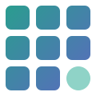
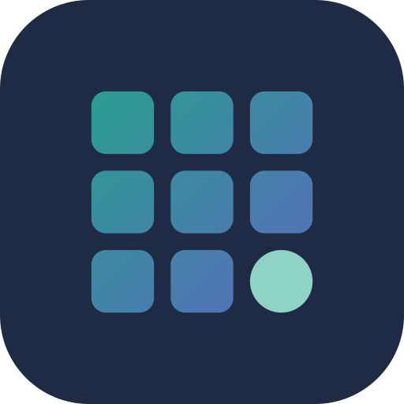

Passive Array is a set of free tools for creators and brands. The brand should feel calm, precise and trustworthy: a quiet grid that does the work while you get on with yours.
An array is a grid of things that work together. Passive means it runs quietly in the background. The mark is a 3 by 3 array of rounded tiles in a calm teal-to-indigo gradient, with one tile turned into a mint circle: the single active node inside a passive array. It reads as data, tools and a friendly dot of life, without shouting.


| File | Use it for |
|---|---|
logo/passive-array-logo-horizontal.svg | Website header, documents, email signatures on light backgrounds |
logo/passive-array-logo-horizontal-on-dark.svg | The same on dark backgrounds (white text, mint accent) |
logo/passive-array-logo-stacked.svg | Square spaces, footers, print |
logo/passive-array-mark.svg | The mark alone when the name is already visible nearby |
logo/passive-array-mark-ink.svg, -white.svg | Single colour situations: embossing, watermarks, tiny sizes |
logo/passive-array-app-icon.svg, social/profile-1080.png | Profile pictures and app icons |
Soft teal and indigo borrowed from the calmer end of social media, grounded by a deep ink. Eye-soothing on long sessions, still distinct next to red YouTube and pink Instagram buttons.
#1F2A44Headlines, body text, dark backgrounds#2A9D8FBrand colour, 'Array' in the wordmark, large headings, icons#1F7F73Buttons, links, anything with white text (passes contrast)#5B6ABFGradient end, secondary accents, charts#8FD3C7The active node, highlights on dark, success states#F4F7F9Page and card backgroundsPoppins SemiBold for headlines
Poppins SemiBold for section titles
Poppins Medium for labels and buttons
Inter Regular for body copy. It is the workhorse: readable at 16px, neutral, free on Google Fonts. Both fonts are free under the Open Font License and are included in fonts/.
Primary button Secondary button
Google Fonts: https://fonts.googleapis.com/css2?family=Poppins:wght@500;600&family=Inter:wght@400;500&display=swap
| File | Size | Where |
|---|---|---|
social/profile-1080.png | 1080 x 1080 | Profile picture on every network |
social/og-image-1200x630.png | 1200 x 630 | Link preview when the site is shared |
social/cover-x-1500x500.png | 1500 x 500 | X header |
social/cover-linkedin-1584x396.png | 1584 x 396 | LinkedIn page cover |
social/logo-horizontal-2x.png, -on-dark-2x.png | Large | Slides, documents, partners who cannot use SVG |
favicon/ | 16 to 512 | Copy to the site root, paste head-snippet.html into the page head |
Regenerate everything with node make-brand.js in this folder. Edit colours or the tagline at the top of that file.